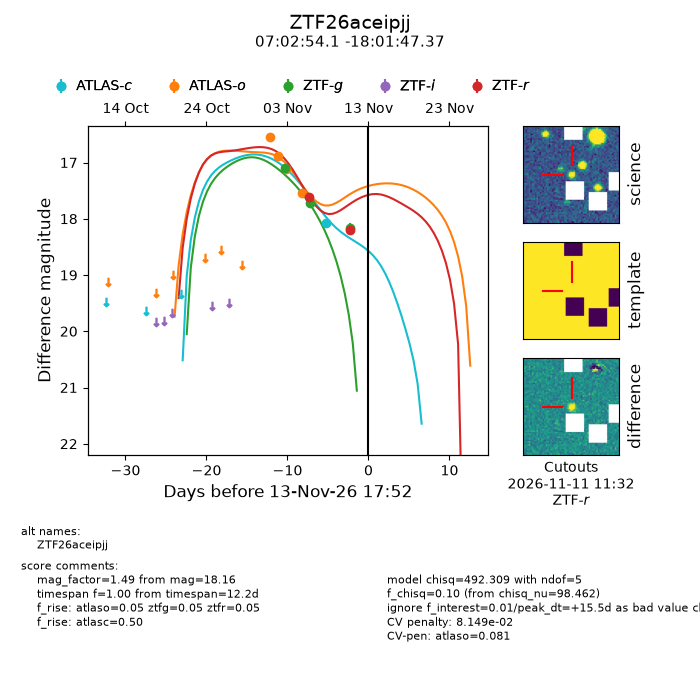
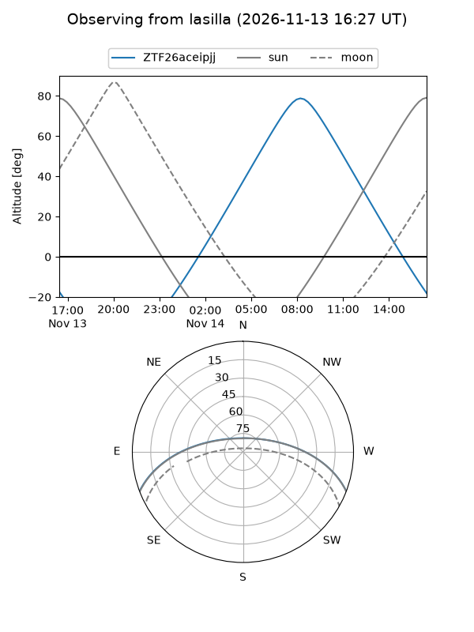
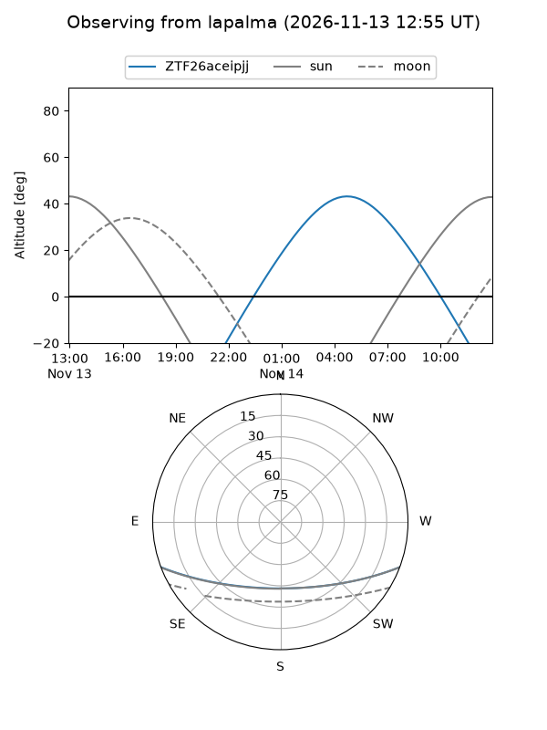
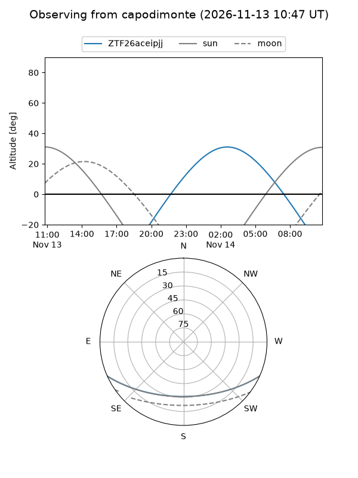
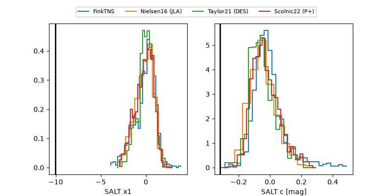

ZTF26aceipjj
Target ZTF26aceipjj at 2026-11-13 17:58
Aliases and brokers:
FINK-ZTF: ztf.fink-portal.org/ZTF26aceipjj
Lasair-ZTF: lasair-ztf.lsst.ac.uk/objects/ZTF26aceipjj
ALeRCE-ZTF: alerce.online/object/ZTF26aceipjj
Direct TNS query: direct search
alt names
ZTF26aceipjj (ztf,fink_ztf)
Coordinates:
equatorial (ra, dec) = 105.7253,-18.02982
equatorial (HMS+DMS) = 07:02:54.07,-18:01:47.37
galactic (l, b) = (230.3056,-5.67126)
Flags:
likely cv: !!
CV pen: 0.08148916480222702
peak dt: +15.5
Photometry:
last atlasc=18.07, atlaso=17.54, ztfg=18.16, ztfr=18.19
1 atlasc, 4 atlaso, 3 ztfg, 2 ztfr detections
Lightcurve

Visibility



Additional plots
